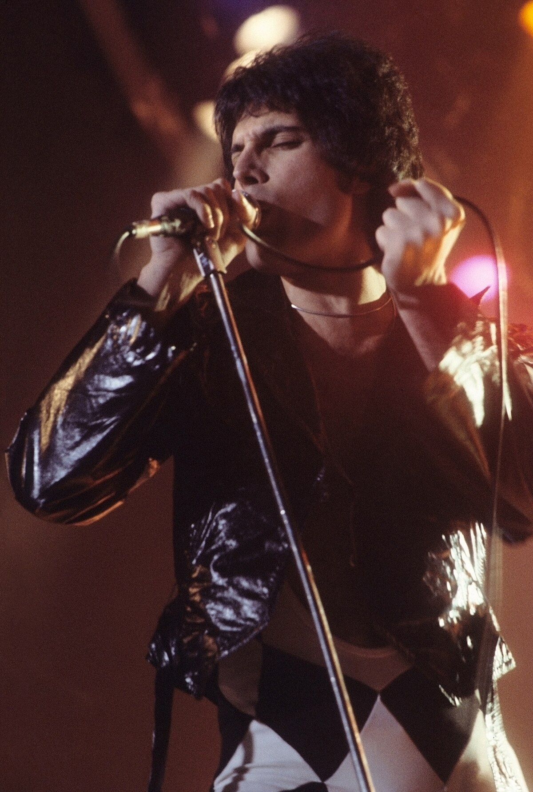

Freddie Mercury – Glas i duša benda Queen
Biografija
Freddie Mercury (pravim imenom Farrokh Bulsara) rođen je 5. septembra 1946. godine u Zanzibaru (današnja Tanzanija), a odrastao je u Indiji i kasnije u Velikoj Britaniji. Bio je pevač, tekstopisac i frontmen benda Queen, poznat po svom moćnom vokalu, harizmi i scenskoj energiji.
Freddie je studirao umetnost i dizajn, ali je njegova prava strast bila muzika. Kada se 1970. godine pridružio grupi Queen, zajedno su stvorili jedan od najuticajnijih rok bendova svih vremena. Njegov glas je obuhvatao četiri oktave, a stil interpretacije bio je istovremeno dramatičan i emotivan.
Mercury je poznat po tome što je pisao neke od najvećih hitova grupe Queen, uključujući „Bohemian Rhapsody“, „Somebody to Love“, „Don't Stop Me Now“ i „We Are the Champions“. Njegovi nastupi uživo, naročito na Live Aid koncertu 1985. godine, smatraju se među najboljima u istoriji roka.
Freddie Mercury je preminuo 24. novembra 1991. godine u Londonu od posledica AIDS-a. Njegova smrt je skrenula pažnju na borbu protiv te bolesti, a njegovo umetničko nasleđe ostalo je besmrtno.
Najpoznatiji albumi
- A Night at the Opera (1975) – Album sa revolucionarnom „Bohemian Rhapsody“ i pesmom „Love of My Life“.
- News of the World (1977) – Sa himnama „We Will Rock You“ i „We Are the Champions“.
- The Game (1980) – Sadrži hitove „Another One Bites the Dust“ i „Crazy Little Thing Called Love“.
- Innuendo (1991) – Poslednji album sa Mercuryjem, sa pesmama „The Show Must Go On“ i „These Are the Days of Our Lives“.
- Mr. Bad Guy (1985) – Freddiejev solo album sa pesmom „I Was Born to Love You“.
Nasleđe
Freddie Mercury je bio jedinstven umetnik koji je pomerio granice roka, opere i pop muzike. Njegov glas, scenska pojava i kreativna vizija učinili su ga legendom. Uticao je na bezbroj umetnika – od Georgea Michaela do Lady Gage.
Kao otvoreno neobična i složena ličnost, Freddie je bio simbol slobode, autentičnosti i izražavanja bez straha. Njegov život i karijera inspirisali su film „Bohemian Rhapsody“ (2018), koji je dodatno osvetlio njegovu ličnost i muzičko nasleđe.
Freddie Mercury ostaje večni simbol umetničke hrabrosti i snage muzike da povezuje ljude širom sveta.